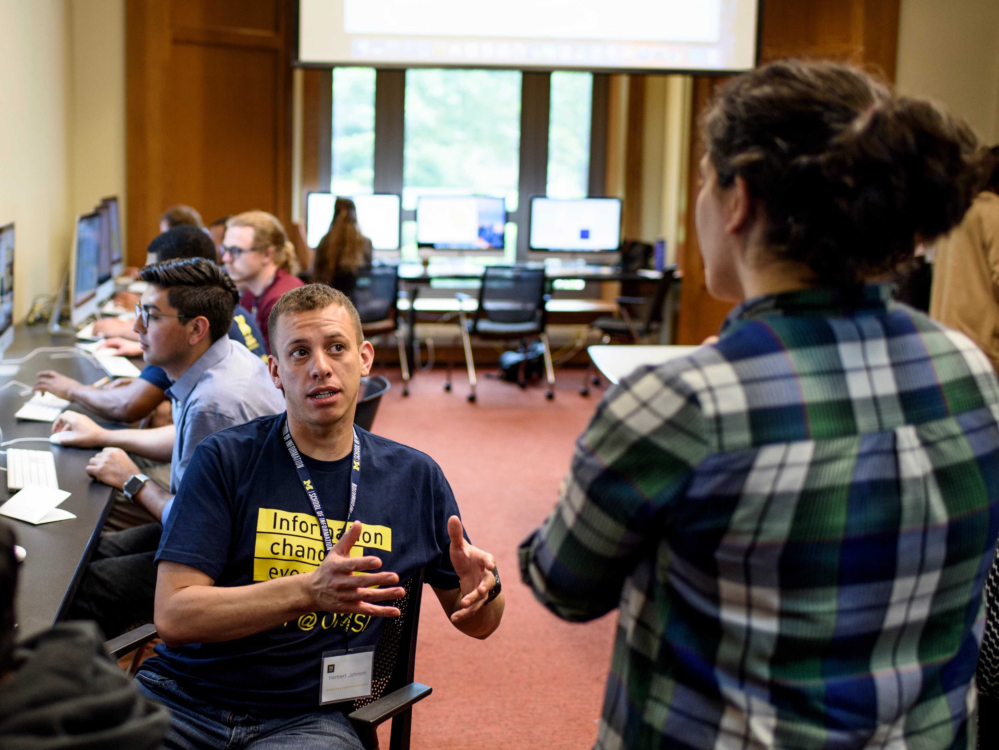
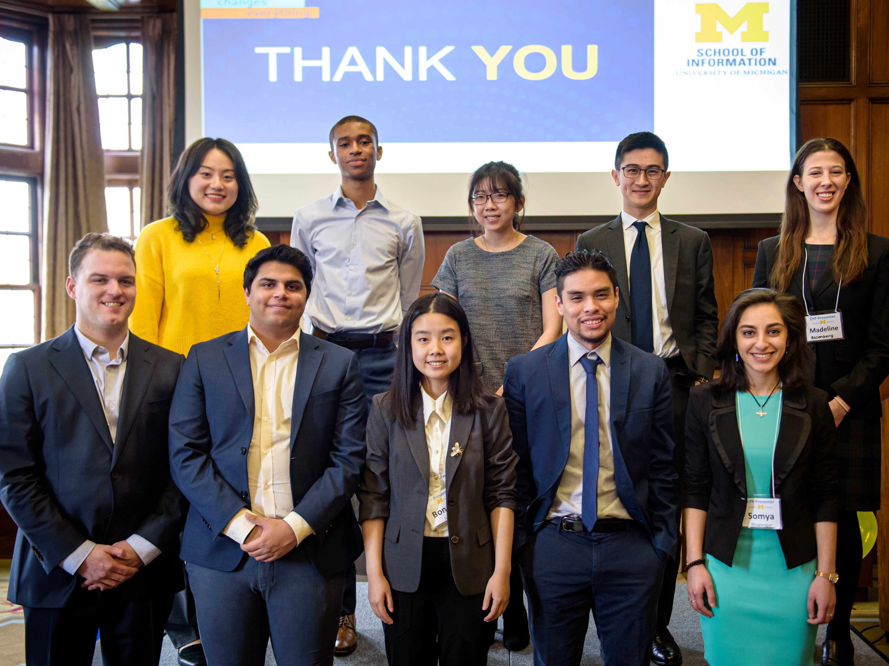

Project Scoping Handout & Terms
Re-evaluate final deliverables against original project commitments.

Close your project responsibly, reflect and evaluate your outcomes criticially.
A project is not complete simply because the final deliverable has been handed over. The final stages—closing, reflecting, and translating—are what transform a transient project into lasting organizational value and personal career momentum. Responsible handoffs ensure that partners are not left with abandoned tools or undocumented systems they cannot maintain. Simultaneously, structured reflection forces you to pause and ask: What did I learn about my technical skills, my teamwork style, and the ethical impact of my work? Without reflection, experience is just something that happened to you; with reflection, experience becomes expertise. Learning to translate complex, messy project narratives into clear resume bullets and portfolio case studies is what turns your UMSI education into your greatest professional asset.
Responsible offboarding is an ethical mandate in engaged learning. Delivering high-quality technical assets is only half the job—ensuring the community partner or client can independently maintain, update, and benefit from your work long after the semester ends is what defines a successful project.


Explore resources to end your project with confidence.
Re-evaluate final deliverables against original project commitments.
Best practices for respectful closure with community organizations.
The Engaged Learning Office works with partners across industries and sectors, from technology companies to grassroots nonprofits and cultural heritage institutions, to provide project-based opportunities for UMSI students.
Its mission is to facilitate transformational engaged learning experiences and enable innovative, sustainable, and mutually beneficial information solutions for local and global communities.